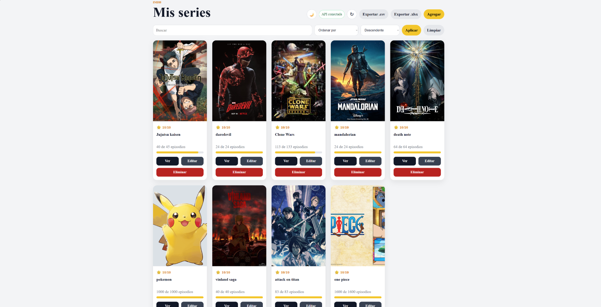

No. 002
Tipo Página web
Rating de películas
Página para calificar películas y llevar un control de las series y películas vistas.
Tecnologías
Qué demuestra
El objetivo de este proyecto es trabajar como full stack para tener experiencia como desarrollador frontend y backend.
Reflexión
Este proyecto me ayudó a vivir la experiencia como desarrollador frontend y backend. Desde ambas perspectivas fue agradable trabajar y siento que es bueno, porque no me tengo que limitar a solo un área.